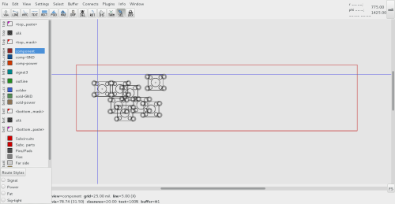
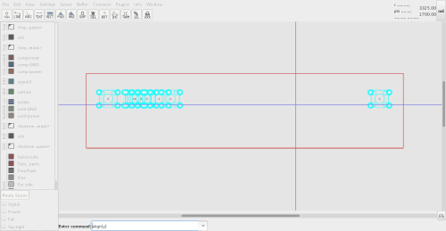
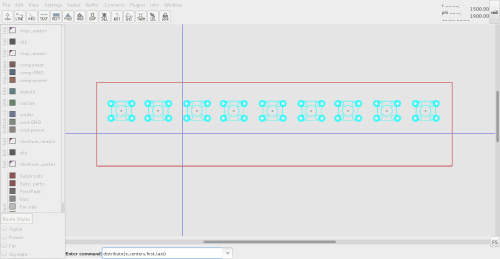
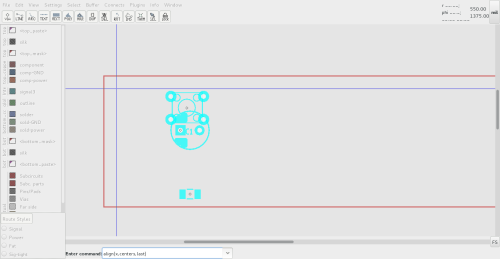
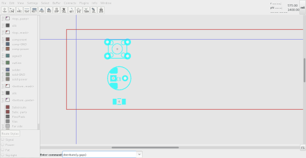
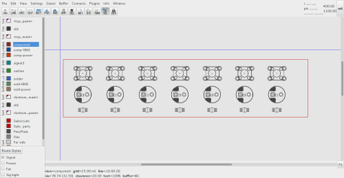

| Command | description | image | ||||||
|---|---|---|---|---|---|---|---|---|
| import | Import an array of 8 TACT_6x6_4p footprints needed for a 1x8 grid. Place the first part at the exact X,Y coord to start the array Place the last part at the X position where the array will end

| align(y)
| The user aligns the TACT_6x6_4p footprints along a Y axis The center of the first part is the default reference point

| distribute(x,centers,first,last)
| Note user places last part in position Parts are distributed between the first and last along the X axis

| |
| Command | description | image | |||||||||
|---|---|---|---|---|---|---|---|---|---|---|---|
| import | A small set of nonhomogenous parts are imported
n/a
| align(x,centers,last)
| The parts are aligned to each other along an x axis with resepect to their centers The chosen x axis is determined from the 'last' part location

| distribute(y,gaps)
| The parts are evenly distibuted by the gaps between them

| copy, align(), distribute()
| The parts in the first step are copied to create an array The align and distribute commands are used for each row of the array in turn

| |
See also: the original email that describes the plugin, the dist/align action argument gallery (illustration).